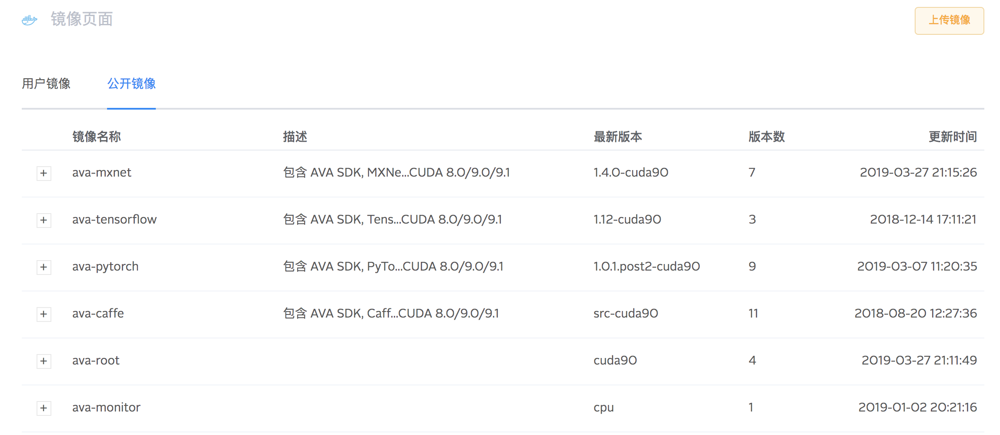
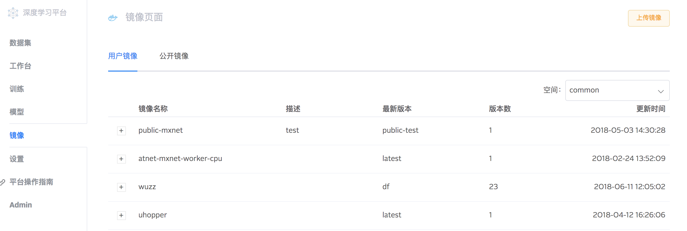

镜像管理
AVA 平台使用 Docker 镜像管理不同的运行环境, 对于算法开发主要优势有:
- 统一管理平台和框架依赖, 保证算法执行环境稳定可靠
- 保持运行环境一致, 加快算法从开发到部署的节奏
- 快速试错, 快速迭代, 快速迁移, 快速扩展
AVA 平台依托七牛云镜像中心, 整合常用机器学习框架和软件包, 为用户提供丰富且可靠的基础镜像. 同时, 用户可以以这些镜像为基础, 编译自定义镜像并在 AVA 中使用, 方便统一管理团队开发环境.
在镜像模块, 用户可以查看平台提供的公开镜像. 
也可以查看用户自己上传到七牛云镜像中心的镜像. 
创建工作台或训练时, 可以使用 AVA 公开镜像, 或自己定制的镜像.
AVA 公开基础镜像
AVA 平台维护了一些基础镜像, 安装了 AVA SDK, JupyterLab, 常用软件包, 和常用机器学习框架, 支持 CPU 和 GPU, 可满足日常算法开发需求. 登录七牛云镜像中心可以搜索到 AVA 公开镜像及 tag:
| Image | Python | AVA SDK | JupyterLab | CPU | CUDA | Framework |
|---|---|---|---|---|---|---|
| ava-sdk | 2.7/3.5 | ✓ | ✓ | ✓ | 8.0/9.0/9.1 | - |
| ava-mxnet | 2.7/3.5 | ✓ | ✓ | ✓ | 8.0/9.0/9.1 | MXNet |
| ava-caffe | 2.7/3.5 | ✓ | ✓ | ✓ | 8.0/9.0/9.1 | Caffe |
| ava-tensorflow | 2.7/3.5 | ✓ | ✓ | ✓ | 8.0/9.0/9.1 | TensorFlow |
| ava-pytorch | 2.7/3.5 | ✓ | ✓ | ✓ | 8.0/9.0/9.1 | PyTorch |
- AVA 公开镜像都基于 Ubuntu 16.04 编译
- AVA 公开镜像都安装了 JuypterLab, 只有安装了 JupyterLab 的镜像才能在 AVA 工作台中使用
- 公开镜像使用 tag 区分上游依赖的版本, 如 ava-mxnet:py27-cuda80-cudnn6 表示镜像中安装了 Python 2.7, CUDA 8.0, CUDNN 6 以及最新版的 MXNet
- CUDA 版本支持 Nvidia GPU 训练加速
自定义镜像
如果经常需要使用其它暂未支持的框架或软件包, 每次启动 Docker 容器后都需要手动安装, 显然既降低效率, 又提高了维护的难度. 可以根据团队的开发需求, 在公开镜像的基础上安装其它软件包, 构建新的镜像. 例如自定义一个使用 Keras 框架的镜像, 可参考以下步骤.
选择合适的基础镜像
基础镜像中已有的文件和可执行程序在新镜像中也能访问, 因此使用 AVA 公开镜像作为基础, 可以快速构建出需要的新镜像.
我们的新镜像使用 keras 框架配合 tensorflow 后端, 可以在 ava-tensorflow 的基础上安装 keras, 至于 tag 可以先选择 py27-cpu 编译 CPU 版本, 成功后只需替换 tag 即可编译其它平台的 keras.
FROM reg.qiniu.com/ava-public/ava-tensorflow:py27-cpu
安装所需软件包
参考 Keras 安装文档, 使用 pip 安装 keras:
RUN pip install keras
- Python 包都使用 PyPI 安装, 避免 Python path 混乱
- RUN 后面可以是任意 shell 命令
编译并推送
编译上述镜像并推送至七牛云镜像中心, 即可在 AVA 镜像管理中查看, 并在工作台或训练中使用:
安装 Docker
登录七牛云镜像中心, 根据提示输入密码
# 使用七牛云帐号登录 $ docker login reg.qiniu.com -u <username>将上面两行语句写入文件
keras.Dockerfile:FROM reg.qiniu.com/ava-public/ava-tensorflow:py27-cpu RUN pip install keras编译镜像
ava-keras:py27-cpu. 其中ava-keras为镜像名称,py27-cpu为 tag$ docker build -t ava-keras:py27-cpu -f keras.Dockerfile .更新镜像 tag, 包含七牛云镜像中心路径
# 将 ava-public 替换为自己的镜像仓库 $ docker tag ava-keras:py27-cpu -t reg.qiniu.com/ava-public/ava-keras:py27-cpu推送至七牛云镜像中心
$ docker push reg.qiniu.com/ava-public/ava-keras:py27-cpu